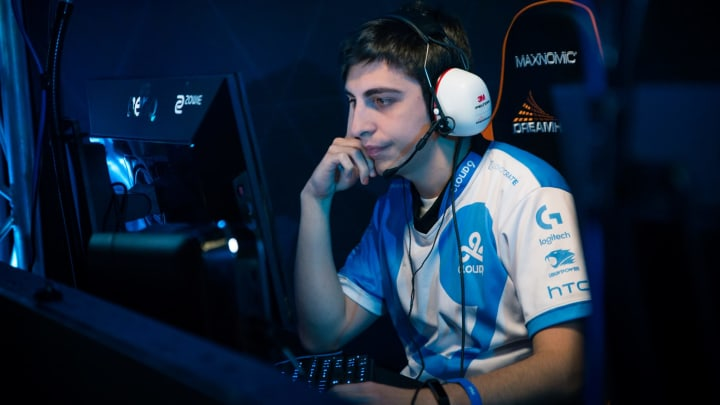

Who is Shroud? Net worth, earnings, streaming setup, and more.
Find out everything you need to know about popular streamer and former pro CS:GO player Shroud
Michael ‘Shroud’ Grzesiek is a popular streamer and former Counter-Strike: Global Offensive professional. The Canadian, who was born in Toronto but is actually of Polish descent, really made a name for himself through streaming on Twitch. In October 2019, he moved to rival site Mixer, only to return to Twitch in August 2020 following the platform’s collapse.
Shroud plays a variety of games on his streams but leans more towards battle royale games and first-person shooters. His most played games are PUBG, CS:GO, Apex Legends, Valorant, and Escape From Tarkov. However, he has also put a lot of hours into GTA V, Call of Duty: Modern Warfare, and World of Warcraft.
He made a name for himself as part of Cloud9’s CS:GO team. He signed for them in 2014 and left both Cloud9 and competitive CS:GO entirely in April 2018. Shroud’s most notable achievement from his time at the organisation was helping his team win Season 4 of the ESL Pro League, beating SK Gaming in the finals to net him and his teammates $200,000 (£162,000).
WHAT IS SHROUD’S NET WORTH?
Shroud’s net worth is estimated to be between $8-12 million. The majority of his net worth comes from his streaming career on both Twitch and Mixer, with revenue sourced from subscribers, donations, ads, and sponsored streams. YouTube revenue and sponsorship deals also bring in extra cash.
HOW MUCH DOES SHROUD EARN?
Shroud earns the majority of his income from streaming. A conservative estimate would suggest that during the peak of his popularity on Twitch he would earn roughly $80,000 (£65,000) a month from his subscriptions, although this could be much higher depending on the revenue split he had with the company.
This figure also excludes donations and money earned from ads and sponsored streams. If you add this money to the total his subscribers bring in then the figure goes beyond $100,000 (£81,000) a month.
This figure also excludes donations and money earned from ads and sponsored streams. If you add this money to the total his subscribers bring in then the figure goes beyond $100,000 (£81,000) a month.
Shroud also has a YouTube channel with over five and a half million subscribers and over half a billion total video views. His videos average around 500,000 views each, which would see him earn in the region of $400,000-$500,000 (£320,000-400,000) over the course of a year.
Additionally, there are a number of big name brands that sponsor Shroud, including Logitech and clothing brand J!nx, with which he has an exclusive collection of merch. These deals will also bring in extra income and add to his net worth.
WHAT IS SHROUD’S STREAMING SETUP?
Shroud has a high spec streaming setup that, in total, would cost somewhere in the region of $6,000-7,000 (£4,800-5,700).
His gaming PC build uses an Intel I9-9980XE processor. For his graphics card, he has an NVIDIA GeForce RTX 2080Ti. His motherboard is the Gigabyte X299 Designare EX and he has 128GB of Corsair Vengeance RGP Pro RAM. This is all packed inside an Acer Predator Orion 9000 case.
For his gaming gear, Shroud uses a BenQ ZOWIE XL2540 240Hz monitor, a wireless Logitech G Pro Ghost gaming mouse, and mechanical keyboard. He also has a Logitech G Pro X headset, but he uses the Shure SM7B microphone to record his voice, instead of the headset’s microphone. He also uses a HD Pro C920 webcam.
Shroud doesn’t use the kind of chair we’re used to seeing on gamer’s streams. No noblechairs or DX Racers here; he uses a Herman Miller Aeron office chair.